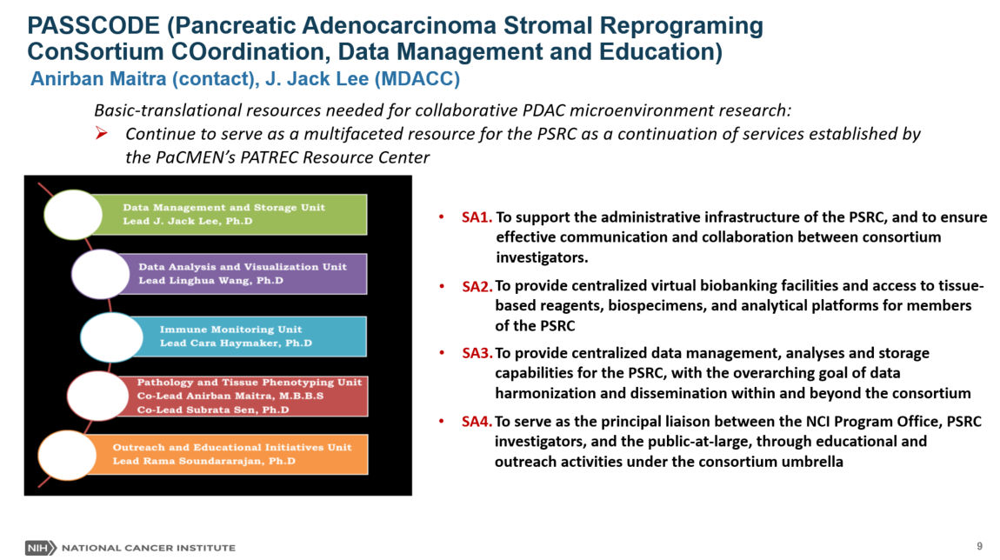

A defining feature of Pancreatic ductal adenocarcinoma (PDAC) is the presence of a host stromal response, which is characteristically more robust (“desmoplastic”) than many solid cancers. Stromal elements, including cancer-associated fibroblasts (CAFs) and the extracellular matrix, are pivotal components of the tumor microenvironment (TME) ecosystem in PDAC, which also includes immune cells, the lymphovascular system, and the intra-tumoral microbiome. In recent years the role of the PDAC stroma (and CAFs, in particular) has morphed to one characterized by profound heterogeneity, plasticity, and context-specificity. The newly created Pancreatic Cancer Stromal Reprogramming Consortium (PSRC) will fund a team of six U01 sites to conduct basic and translational research studies on the role of the stroma and other TME constituents in PDAC pathogenesis and outcomes. We have collated a multidisciplinary team of investigators at UT MD Anderson with the goal of creating PASSCODE (Pancreatic Adenocarcinoma Stromal Reprograming ConSortium COordination, Data Management and Education Center), that will serve as an organizing “hub” for coordination, communication and collaboration within the PSRC, and support the newly funded U01 sites. PASSCODE will be co-led by Dr. Anirban Maitra, an expert in PDAC pathology, genetics, and cancer biology, and Dr. Jack Lee, an expert in biostatistics, clinical trial design and data science. PASSCODE proposes four aims: First, we will support the administrative infrastructure of the PSRC, and ensure effective communication and collaboration between consortium investigators, the NCI program office and other trans-NCI networks, including facilitating all of the PSRC-approved in-person and virtual meetings. We will also provide operational support for material and data transfer agreements that are germane to the collaborative studies within the PSRC. Second, we will develop a framework for a PSRC “virtual biorepository” as a registry database for shared biospecimen access across the consortium, and develop SOPs for processing, storage, cataloging, and distribution of annotated biospecimens and de-identified clinical, demographic, and molecular information. Third, we will provide centralized data management and data storage capabilities for the PSRC, with the overarching goal of data harmonization and dissemination, within and beyond the consortium. As part of this aim, PASSCODE will provide dedicated biostatistical and bioinformatics analytical tools, and multimodal data visualization for PSRC investigators, including for approved collaborative projects. Fourth, PASSCODE will be responsible for developing and maintaining both a “public facing” PSRC website and other social media outlets, as well as a secure intranet site. We will organize seminars and workshops that highlight progress within the PSRC, and provide a platform for educational/mentorship opportunities, especially with regards to enhancing the participation of underrepresented minority trainees. Cumulatively, PASSCODE’s activities will be geared towards ensuring the success of the consortium’s mission of improving PDAC survival through innovative and collaborative research endeavors. For more information click here

Dr. Maitra is Professor of Pathology and Translational Molecular Pathology (TMP), and Scientific Director of the Sheikh Ahmed Center for Pancreatic Cancer Research at UTMDACC. Dr. Maitra has led an NCI-funded translational research laboratory for twenty years (over 8 years at UTMDACC) that is dedicated to pancreatic cancer research, including PDAC biology, genetics and molecular pathology. Dr. Maitra has extensive expertise in profiling of human and murine PDAC tissues, including deep characterization of the PDAC tumor microenvironment.
Contact: amaitra@mdanderson.org
Dr. Lee is a Professor of Biostatistics, Kennedy Foundation Chair in Cancer Research at UTMDACC, and Fellow of the American Association for the Advancement of Science, Society of Clinical Trials and American Statistical Association. Dr. Lee is an expert in biostatistics and data science, who has championed the design and analysis of several seminal clinical trials (such as the BATTLE trial in Lung Cancer). He has developed multiple web-based databases at both the institutional (MD Anderson Lung Cancer Moon Shot) and national (NCI SPORE, Stand-Up-To-Cancer) levels. He has extensive experience in analyzing multi-analyte biomarker data collected from clinical and translational studies, correlated to clinical outcomes. As PASSCODE Co-PI, he will bring his long-standing expertise in biostatistics, databases, data management and analytical support to the PSRC.
Contact: jjlee@mdanderson.org
Dr. Wang is an Assistant Professor in the Department of Genomic Medicine at UTMDACC, where she leads the Computational Biology Laboratory. Dr. Wang has significant expertise in cancer genomics, immunogenomics, and single-cell computational biology. Dr. Wang was the Institutional Bioinformatics Lead of a very successful rare cancer project funded by NHGRI, the Exceptional Responder Initiative funded by NCI, and has contributed significantly to multiple TCGA and pan-cancer projects when she was at Baylor College of Medicine. She currently serves as the Bioinformatics Lead and/or project co-Leader on two MD Anderson Cancer Moon Shot Programs and is co-investigator on several federal extramural grants from the NIH and DOD. Over the years, her laboratory has developed significant expertise in deep profiling of intra-tumor heterogeneity and tumor evolution, tumor cell plasticity, and tumor-immune-stromal crosstalk to understand disease progression and therapy response, using cutting-edge sequencing technologies coupled with the state-of-the-art computation and modeling. Dr. Wang is also developing a single cell sequencing data portal which will be provided to the PSRC investigators as a tool for data mining. In light of her considerable expertise, Dr. Wang will serve as the Lead of the Data Analysis and Data Visualization Unit of PASSCODE. She will supervise a computational scientist in her lab who will be dedicated to these consortium-specific efforts. Dr. Wang will establish and co-lead a data science working group within the PSRC that will be responsible for setting data science standards for consortium-generated data, and for framing collaborative data science projects.
Contact: lwang22@mdanderson.org
Dr. Haymaker is an Assistant Professor in the Department of Translational Molecular Pathology (TMP), and the Director of the MD Anderson Cancer Moon Shot TMP-Immuno-profiling Laboratory and the NCI CCSG-funded ORION Core at UTMDACC. Dr. Haymaker is also co-director of the Cancer Immune Monitoring and Analysis Centers (CIMAC) site at UTMDACC that was initiated and supported by the NCI to provide a platform for standard, state-of-the-art assays and analyses of NIH-sponsored clinical trials. Dr. Haymaker is a cancer immunologist with enormous expertise in cellular-based functional assays, flow cytometry, multiplex cytokine profiling, and CyTOF. Dr. Haymaker will serve as a co-investigator and Lead of the PASSCODE Immune Monitoring Unit, which will make available to the consortium a large number of optimized immune profiling assays in blood and in tissues. Consortium investigators will be able to leverage these assays at cost for PSRC-approved studies, and a research scientist will be partially funded by PASSCODE in Dr. Haymaker’s facility to provide this immune monitoring service. Dr. Haymaker will also provide consultation to any PSRC investigator who would like to set up an in-house immune monitoring assay.
Contact: chaymaker@mdanderson.org
Dr. Sen is Professor of Translational Molecular Pathology at UTMDACC, is an NCI-funded research investigator in the area of early detection of PDAC, including serving as the PI of the Pancreatic Cancer Detection Consortium (PCDC) U01. Dr. Sen has led numerous studies on tissue and blood-based biomarkers in early pancreatic neoplasia and collaborated with Dr. Maitra on several translational projects (using technologies such as single cell RNA sequencing, multiplex IF) using limited, real-world biospecimens and precancerous lesions. Dr. Sen will serve as the co-Lead of the Pathology and Tissue Phenotyping Unit. He will also participate on behalf of the PASSCODE in relevant PSRC working groups.
Contact: ssen@mdanderson.org
Dr. Soundararajan is Associate Professor and Director of Educational Initiatives and Training in the Department of Translational Molecular Pathology (TMP). At UTMDACC, Dr. Soundararajan is the Director and co-founder of a unique mentorship and career development program for trainees in cancer research called the Interdisciplinary Translational Education and Research (ITERT) program. The goal of ITERT is to ensure that trainees are best prepared to lead successful professional careers in academia and other related fields in translational cancer science. Since its inception in 2014, ITERT has served undergraduates, graduate students and postdoctoral fellows in UTMDACC and across the Texas Medical Center in research education, career development and fostering a learning community of peers. Dr. Soundararajan will serve as the Lead for the Outreach and Educational Initiatives Unit for PASSCODE. She will direct the implementation of a dedicated PSRC summer research internship (with stipend) for URM undergraduates in partnership with local and national colleges serving URMs, in order to develop a pipeline of URM trainees for a future in PDAC research. Further, Dr. Soundararajan will also offer virtual workshops for career development for trainees funded through the PSRC at the 6 U01 consortium sites, leveraging the existing ITERT infrastructure, and hold invited seminars in topics that are germane to the consortium. The ITERT funded staff (Ebonie Hatfield, contact: erhatfield@mdanderson.org) will assist Dr. Rama Soundararajan in the administration of PASSCODE educational and training initiatives.
Contact: rsoundararajan@mdanderson.org
Dr. Mendoza Perez is Scientific Project Director in the Department of Translational Molecular Pathology at UTMDACC and will act as the Project Director for the PASSCODE. She brings considerable prior experience in effective project management, through her comparable role in the NCI-funded Cancer Moonshot consortium on the PDAC tumor microenvironment (PaCMEN). She oversees all administrative activities for PASSCODE and is the primary contact for all PSRC-related communications within the consortium.
Mr. Juan Posadas Ruiz has extensive experience offering 20+ years of architecting software solutions and integrating Microsoft Stack products with ample knowledge in cloud, web development, database management, and infrastructure. Proven track record in engineering from the ground-up systems such as CTMS and LIMS for consortia-level projects. Mr. Posadas brings prior expertise in database programming and website development for NCI-funded projects such as PaCMEN Consortium, N01, CIMAC, etc.
Dr. Rinsurongkawong has extensive experience in database management and integration. She has been the primary database programmer and the web developer for the Salivary Gland Tumor Biorepository which was funded by the National Institute of Dental and Craniofacial Research. In addition, Dr. Rinsurongkawong has served as the primary research database developer for the NCI funded N01 studies on the development of cancer prevention agents and many other institutional research databases.
Ms Hatfield is a Program Manager in the Department of Translational Molecular Pathology at UTMDACC. She provides support to Dr. Soundararajan on the educational and training initiatives of PASSCODE, and to Dr. Mendoza Perez on PASSCODE operational activities.